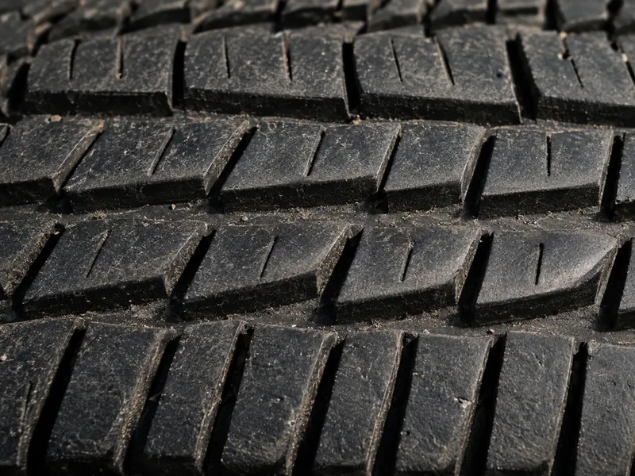
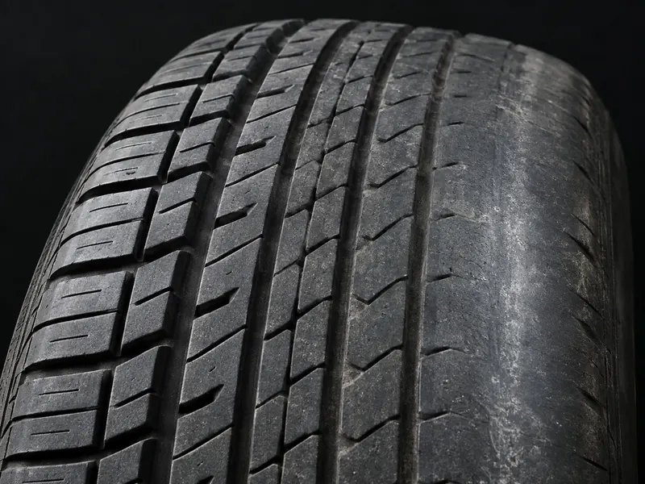
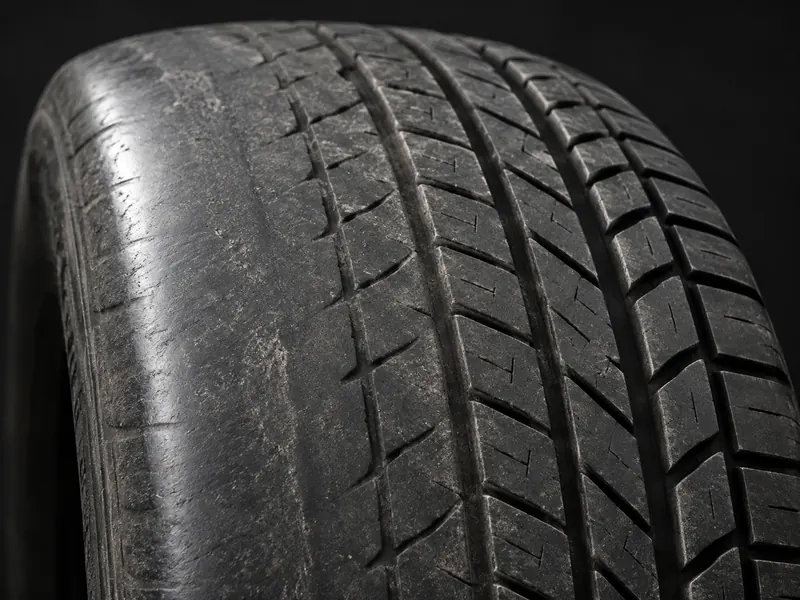
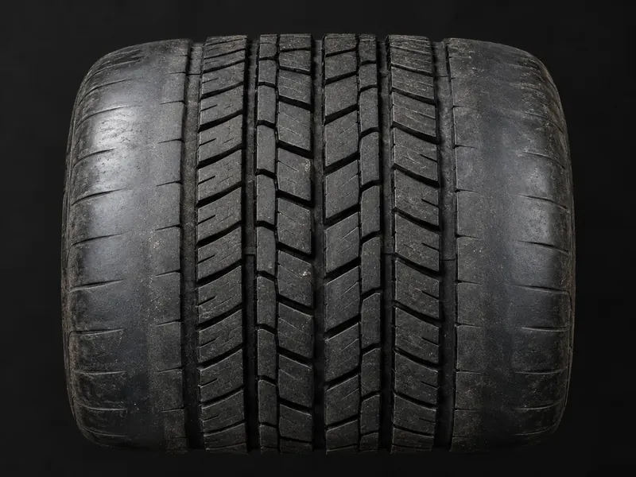
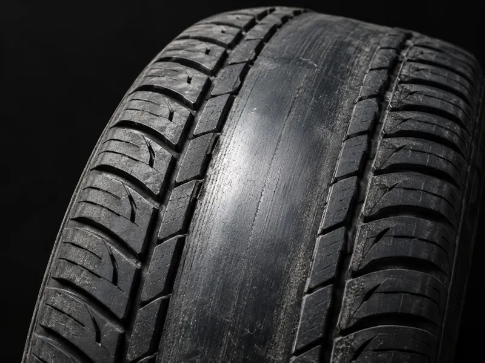

Precyzyjne ustawienie zbieżności i kątów kół z użyciem nowoczesnego sprzętu 3D. Specjalizujemy się w zawieszeniach wielowahaczowych i autach sportowych.
Źle ustawione koła to nie tylko szybsze zużycie opon – to realne zagrożenie bezpieczeństwa i wyższe rachunki za paliwo.
Nieprawidłowa geometria potrafi zniszczyć nową oponę w ciągu kilku miesięcy. Prawidłowe ustawienie może przedłużyć żywotność ogumienia nawet o 30%.
Koła „walczące" ze sobą zwiększają opory toczenia, przez co silnik pracuje ciężej. Efekt: wyższe zużycie paliwa o kilka procent.
Auto nie prowadzi prosto, ciągnie w bok, kierownica jest skrzywiona? To klasyczne objawy złej geometrii wymagające natychmiastowej korekty.
Koła ustawione prawidłowo zapewniają optymalną przyczepność w zakrętach i hamowaniu – szczególnie ważne przy gwałtownych manewrach.
Błędna geometria przyspiesza zużycie sworzni, przegubów i łożysk. Korekta przed wymianą tych części to inwestycja, która się zwraca.
Dla aut sportowych oferujemy ustawienia niestandardowe (np. ujemny camber, dedykowany toe) pod konkretny styl jazdy i oponę.
Nie czekaj aż auto zacznie się prowadzić źle – te sytuacje wymagają kontroli natychmiast.
Używamy systemu pomiarowego 3D na podczerwień – 2 kamery i 4 ekrany zakładane na felgi jednocześnie mierzą wszystkie koła i dają pełny obraz ustawień pojazdu.
Cena zależy od typu zawieszenia i zakresu prac. Pomiar zawsze jest pierwszym krokiem.
| Usługa / Typ pojazdu | Przednia oś | Obie osie |
|---|---|---|
| Pomiar | ||
| Pomiar (każdy samochód) | 150 zł | |
| Regulacja (zawiera pomiar) | ||
| Prosty wahacz (np. Ford Focus Mk2) | 250 zł | 350 zł |
| Wielowahacz prosty (np. BMW E90) | 250 zł | 450+ zł |
| Trudny dostęp (np. BMW 5, Audi RS3) | 250 zł | 550+ zł |
| Auta sportowe | 300 zł | 600+ zł |
| Busy do 3.5t | 300 zł | Indyw. |
| Reset czujnika kąta skrętu | 200 zł | |
| Dociążenie do geometrii (jeśli konieczne) | 50 zł | |
Jedno koło w przestrzeni, pięć parametrów, jeden wspólny model. Ustaw kąty i zobacz, jak zmienia się odcisk opony na drodze oraz zachowanie auta.
Geometria
Symulacja jazdy
Ustawienie w normie. Nacisk rozkłada się równomiernie na całej szerokości bieżnika.
Przebieg szacunkowy dla opony osobowej ścieranej do 1,6 mm. Model poglądowy, nie zastępuje pomiaru na urządzeniu.
Opona zapisuje błąd ustawienia wcześniej, niż poczujesz go na kierownicy. Przy każdej pozycji jest przycisk „Odtwórz”: ustawi symulator powyżej tak, żeby ten właśnie wzorzec powstał na twoich oczach.

Klocki bieżnika starte ukośnie. Przesuń dłonią w poprzek opony: w jedną stronę gładko, w drugą jak po pile. Koło przy każdym metrze jazdy jest wleczone bokiem.
Geometria Błędna zbieżność. Najszybszy sposób na zniszczenie kompletu opon.

Pas przy wewnętrznej krawędzi wygładzony, zwykle niewidoczny bez podniesienia auta. Środek i zewnętrzna strona wyglądają na zdrowe.
Geometria Zbyt duży ujemny camber: obniżenie bez korekty, zmęczone wahacze, skutek stłuczki.

Zużycie po zewnętrznej stronie opony, widoczne od razu przy kole. Bark bywa zaokrąglony, jakby został zlizany.
Geometria Dodatni camber albo zbyt duża zbieżność. Przy wyższych przebiegach częściej objaw zużytego zawieszenia niż samego ustawienia.

Krawędzie zużyte symetrycznie, środek bieżnika w dobrym stanie. Opona ugina się pod obciążeniem i dotyka drogi tylko brzegami.
Ciśnienie Za miękko. Geometria bywa tu bez winy, dlatego ciśnienie sprawdzamy przed każdym pomiarem.

Wypolerowany pas przez środek opony, barki praktycznie nieużywane. Auto jeździ twardo i wcześniej gubi przyczepność na mokrym.
Ciśnienie Za twardo. Opona wybrzusza się na środku i tylko ten pas przenosi obciążenie.
Dzwoń śmiało z pytaniami – opiszemy co należy zrobić w przypadku Twojego auta zanim jeszcze do nas przyjedziesz.